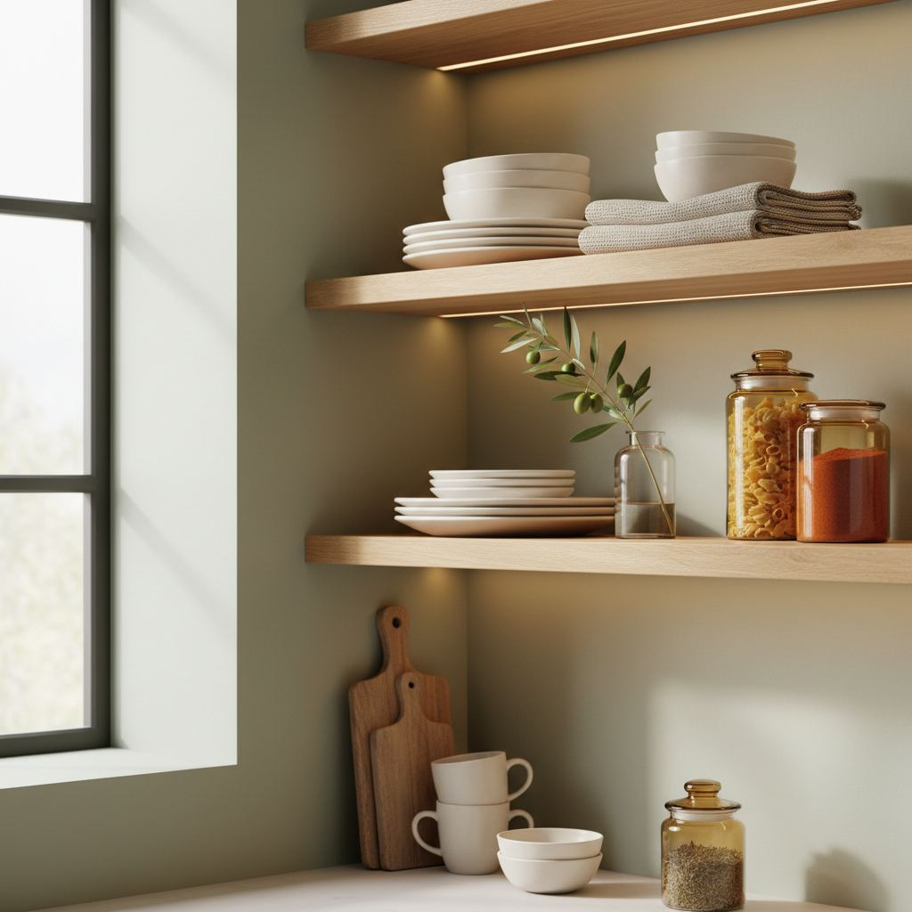
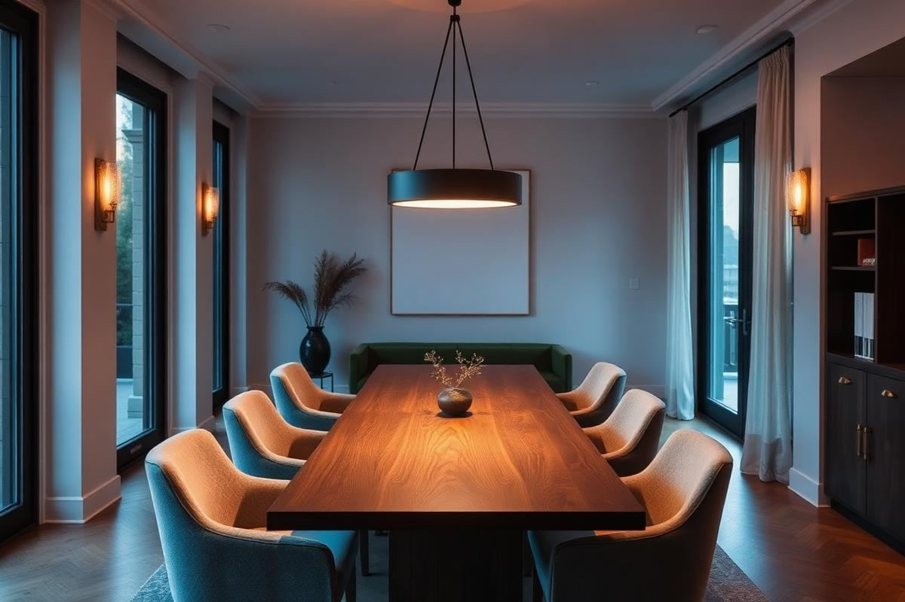

Open Kitchen Shelving: When It Works, When It Doesn't

Open shelving is one of the most divisive choices in kitchen design. Whether it will work for you depends less on your kitchen's style and more on how you cook, clean, and store.
Kitchens where it works
Open shelving works in kitchens with good ventilation (grease is the number one problem), a compact everyday dish collection, and cooks who don't mind wiping shelves weekly. It also works spectacularly for a single accent run above a counter, paired with mostly-closed cabinetry.
Kitchens where it doesn't
It struggles in kitchens near frying stations, in homes with large or mismatched dish collections, and for anyone who does not enjoy styling. It also becomes a dust trap in low-use vacation homes.
How to style it
Keep 60% of items functional and 40% decorative. Group by color and material, not by function, and leave visible negative space between groupings.

Material Matters: Choosing the Right Shelving Type
Beyond aesthetics, the material of your open kitchen shelving dictates durability, maintenance, and even weight capacity. Solid wood, particularly oak or maple, offers warmth and can support heavier items like stacks of ceramic dinnerware. A 1.5-inch thick solid oak shelf, 36 inches long and 10 inches deep, typically costs $80-$150. However, wood requires sealing to prevent warping from steam and grease. For a more industrial or minimalist look, consider stainless steel. Brushed stainless steel shelves are remarkably easy to clean and robust, ideal for frequently used cookware. A similar sized stainless steel shelf might be $60-$120. Glass shelves, often 3/8-inch or 1/2-inch tempered, provide an airy feel and reflect light beautifully, making small kitchens feel larger. They are best for lighter Decorative items like glassware or small plants. Ensure glass shelves are installed with heavy-duty brackets rated for at least 15 pounds per linear foot. Consider powder-coated metal for a pop of color or a sleek matte finish, offering good durability at a mid-range price point.
Material Breakdown
- Solid Wood (Oak, Maple): Max weight ~40-50 lbs/ft, warm aesthetic, requires sealing.
- Stainless Steel: Max weight ~60-70 lbs/ft, industrial & durable, easy to clean.
- Tempered Glass: Max weight ~15-20 lbs/ft, airy & reflective, best for lighter items.
- Powder-Coated Metal: Max weight ~30-40 lbs/ft, diverse colors, good durability.
The Science of Spacing and Placement
Effective open shelving isn't just about what you put on it, but how it's integrated into your kitchen’s architecture. For an uncluttered feel, shelves should ideally be 12-18 inches above the countertop, allowing ample space for prep work beneath. Many designers opt for shelves positioned directly above where upper cabinets would traditionally be, typically 18-20 inches above the counter. The vertical spacing between shelves is critical. A minimum of 12 inches is recommended for standard dinner plates and small appliances. For larger items like pitchers or blenders, aim for 15-18 inches. Avoid placing shelves directly above the range unless they are 24+ inches above the burners and constructed from easy-to-clean, non-porous materials like stainless steel or sealed tile to withstand grease splatter. Overhang is also a consideration; shelves generally shouldn't extend more than 2-3 inches beyond their supporting brackets to prevent bowing or instability, especially with heavier items. Ensure your shelving unit (e.g., two 36-inch long shelves) is centered over a key kitchen feature like the sink or a section of the countertop for visual balance.
Key Dimensions for Functionality
- Countertop to Shelf: 12-18 inches (minimum for clear workspace), or 18-20 inches (standard cabinet height).
- Shelf to Shelf: 12-18 inches (12 for plates, 15-18 for larger items).
- Shelf Depth: 8-12 inches (8 for glasses, 10-12 for plates/bowls).
- Shelf Overhang over bracket: Max 2-3 inches.
Lighting Layers and Luxe Details
Open shelving offers a unique opportunity to integrate lighting, transforming utilitarian storage into a focal point. Under-shelf lighting, such as discreet LED strip lights, can illuminate the items on the shelf below and provide practical task lighting for the countertop. Opt for warm white (2700K-3000K) LEDs for a homey glow. Puck lights, recessed into the underside of thicker shelves, also work well. For a more dramatic effect, consider small, directional spotlights mounted above to highlight specific decorative pieces. Beyond lighting, consider the 'luxe details' that elevate the look. Polished brass or matte black brackets, for instance, can add an instant touch of sophistication compared to standard chrome. Think about the edge profile of your wooden shelves; a subtle bevel or round-over softens the look. Installing a simple trim piece along the front edge of a painted shelf can give it a custom, built-in feel. These small investments in hardware and finishing can significantly impact the overall perceived value and design of your open shelving.
Lighting & Detail Enhancement
- Under-shelf LED strips: Practical task lighting, ambient glow (average $20-$50 per 5ft strip).
- Recessed LED puck lights: Focused illumination, clean look (average $15-$30 per light).
- Directional spotlights: Highlight specific items, dramatic effect (average $30-$60 per fixture).
- High-end brackets: Brass, matte black, oil-rubbed bronze (average $20-$60 per pair).
- Shelf edge profiles: Bevel, round-over, or custom trim for a finished look.
The True Cost and Installation Nuances
While open shelving can appear more affordable than custom cabinetry, the 'true' cost involves more than just the shelves themselves. Professional installation for a set of two 36-inch shelves can range from $150-$400, depending on your location and the complexity (e.g., finding studs in an old plaster wall). If you're a DIY enthusiast, a stud finder ($20-$50), level ($15-$40), and appropriate drill bits ($10-$20) are essential. Crucially, always drill into wall studs for maximum support. Toggle bolts or heavy-duty anchors are a last resort if studs are unavailable, but they significantly reduce weight capacity. For floating shelves, internal metal rods (often $30-$80 per rod) require precise drilling into studs and perfectly level installation. Consider a dry-fit of your layout using painter's tape to visualize the placement before drilling. The weight of your intended items also dictates the bracket choice; a standard L-bracket might hold 20-30 lbs, while heavy-duty concealed brackets for floating shelves can hold 50+ lbs per stud. Factor in the cost of finishes like wood sealer ($15-$30) or paint if customizing unfinished shelves.
Installation Cost & Tool Breakdown
- Professional Installation: $150-$400 for 2-3 shelves.
- DIY Tools: Stud finder ($20-$50), Level ($15-$40), Drill & bits ($50-$150), Measuring Tape ($10-$20).
- Anchoring: Always into studs (preferred). Toggle bolts/heavy-duty anchors for plaster/drywall (weight capacity reduced).
- Floating Shelf Hardware: Internal rods ($30-$80/rod), requiring precise installation.
Maintaining the Masterpiece: Long-Term Care
The allure of open shelving hinges on its pristine appearance, which demands consistent, thoughtful maintenance. Unlike closed cabinets, every smudge, dust particle, or grease splatter is on display. For wood shelves, regular dusting with a microfiber cloth is crucial. Periodically, (every 3-6 months) wipe down with a wood-safe cleaner or a damp cloth followed by immediate drying. If you opted for unsealed wood, anticipate deep cleaning and re-sealing every 1-2 years to protect against moisture and stains. Stainless steel shelves are more forgiving; a weekly wipe-down with a stainless steel cleaner and a microfiber cloth will maintain their luster and prevent fingerprint buildup. Glass shelves require frequent cleaning, often every few days in a busy kitchen, with a streak-free glass cleaner. The items you display also need attention. Rotate decorative pieces to prevent dust accumulation in one spot. Regularly decant staple foods like flour, sugar, or pasta into attractive, airtight containers (e.g., clear glass jars with bamboo lids, $5-$15 each) not only for aesthetic appeal but also to protect contents and facilitate easy wiping of the shelf itself. Embrace stylish, functional containers to make maintenance part of your styling.
Maintenance Routine Essentials
- Daily/Weekly: Dusting with microfiber for all materials.
- Wood: Monthly wipe with wood cleaner; re-seal annually if unsealed.
- Stainless Steel: Weekly wipe with stainless cleaner to prevent fingerprints and buildup.
- Glass: Bi-weekly (or more) wipe with streak-free glass cleaner.
- Items: Decant staples into uniform, airtight containers; rotate decorative objects.
Key takeaways
- Open shelves suit ventilated, low-clutter kitchens.
- One accent run beats a whole-kitchen commitment.
- Group by color and material, not by function.
Frequently asked questions
How often do open shelves need cleaning?
Once a week is realistic in a kitchen used daily. Shelves within four feet of a stove need wiping more often.

Sophia Bennett is a certified interior stylist and the senior editor at Styleire. She has spent more than eight years helping homeowners and renters create warm, functional interiors, with hands-on experience across small city apartments and family homes. Her work has been informed by close collaboration with independent designers, craftspeople, and product testers.
View full profile →Related reading

Small Kitchen Decor Ideas That Add Style Without Clutter
Every square inch of counter matters in a small kitchen. Here is how to add style without losing prep space.

Dining Room Lighting Guide: Pendants, Height, and Bulbs
A great dining room comes down to one fixture, hung correctly, with the right bulb.